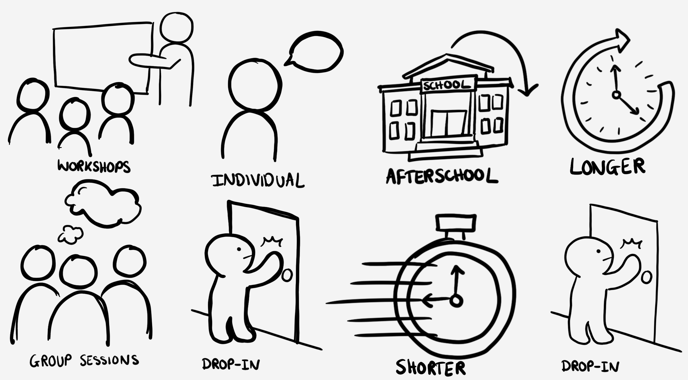

Coping With School
I identified a gap in student support, researched it directly, and built a programme from scratch. I pitched it to senior leadership, rolled it out to the students who needed it most, and cut their behaviour points by 39% in six weeks. It's still running today.
Overview
It started with one student. Continuously chucked out of lessons, crying because he couldn't stop himself - he needed help. I built resources for him as we went, tried things, tracked what helped and what didn't. Over a few weeks a pattern emerged, the strategies that worked weren't specific to him, and the moments he struggled with weren't either. So I made it a programme. Working with the SENCO and Heads of Year, I built Coping with School: six structured sessions and written resources designed so any pastoral staff member could deliver it, not just me. By the time I proposed it, I already knew the core worked.
The Problem
The students struggling most weren't being caught early enough. Unflagged by any formal process, they were already in crisis by the time anyone noticed and every day meant reacting to the same students in the same moments, with nothing making it easier for them the next day.
User Research
Before scaling beyond that first student, I went to the people closest to the problem - speaking directly with students and gathering parent forms. Both surfaced the same three needs, without prompting each other. Combined with the SENCO's operational insight, this gave me a consistent, triangulated picture of the problem, not just one perspective on it.
Students felt teachers didn't understand them, only reacted to their behaviour.
Students needed somewhere that felt genuinely safe to go when they were struggling.
Students needed practical ways to manage their emotions, not just to be told to calm down.
Ideation
Before testing anything, I looked at a wider range of ways to give students somewhere to go and a consistent time to be supported, drop-in spaces, workshops, after-school sessions among them, before narrowing down to the two formats and two timings worth properly testing.
coping-with-school-ideation.jpg to assets/projects/
Prioritisation
In each case, the easier option looked reasonable on paper, but testing it against real behaviour showed it wasn't solving the actual problem so I chose the option the evidence supported, even where that meant more staff time and effort.
| Option | Ease of Implementation | Staff Effort | Effectiveness | Decision |
|---|---|---|---|---|
| Group sessions | High | Low | Low | Rejected |
| Individual sessions | Low | High | High | Chosen |
| Longer, less frequent sessions | High | Low | Low | Rejected |
| Short, frequent sessions | Low | High | High | Chosen |
Pitching The Programme
A programme like this doesn't happen without sign-off. I pitched it directly to senior leadership: the problem, what I'd already learned from running it informally with one student, the reasoning behind the format and timing decisions, and what it would cost to run properly. The case was straightforward, staff were already spending significant time managing these students reactively, so the cost of a structured, proactive programme instead was minimal by comparison. Leadership backed it specifically to reduce reactive time, exclusions, internal exclusions, behaviour points and detentions, and to support student wellbeing more directly. I secured approval to build it properly.
Building
The programme's core design answered what I'd heard directly: a safe space to go to when struggling, and practical tools to manage emotions in the moment. I created a structured six-session plan and wrote the accompanying resources myself, designed around a defined cohort of 18 students - built so any pastoral staff member could run it, not just me.
Alongside the sessions themselves, I built tracking spreadsheets to measure behaviour points, house points, attendance, and student-reported wellbeing. The programme's impact could be measured, not assumed. Every session was logged against these markers, giving me a running record I could report against and, eventually, use to prove what was and wasn't working.
Rollout
A programme staff don't understand is a programme staff won't sustain, so rollout meant designing for adoption, not just delivery. I led a discussion with teachers and staff to walk through the reasoning behind the programme, directly addressing the insight that students and parents gave. I also built the resources and tracking spreadsheets so any pastoral staff member could run the programme independently, removing myself as a single point of failure from day one.
Impact
Outcomes were tracked consistently across all four markers and reported to leadership throughout. Comparing the six weeks before the programme to the six weeks after, average behaviour points across the cohort dropped by 39%. Staff also reported a noticeable difference in day-to-day management and that the individually-tailored approach was working.
Legacy
Before I left the role, I documented the full process end to end and trained other members of staff so it didn't depend on me to keep working. It's still running today.
Reflection
If I ran this again, I'd build the tracking system before the first informal sessions with that one student, not once the programme was formalised. Some of the earliest, most useful signal was informal and only partly captured. I'd also collaborate more closely with the SEN team throughout the actual interventions, not just at the design stage. Email updates weren't enough to keep the work genuinely intertwined and a more formal, ongoing way of working together would have made the programme stronger.